בעלי חיים
אריה
אריה (שם מדעי: Panthera leo)
הוא מין של טורף גדול מהסוג פנתר שבמשפחת החתוליים, והוא השני בגודלו בין
בני הקבוצה דמויי חתול, אחרי תת-המין הסיבירי של הטיגריס.
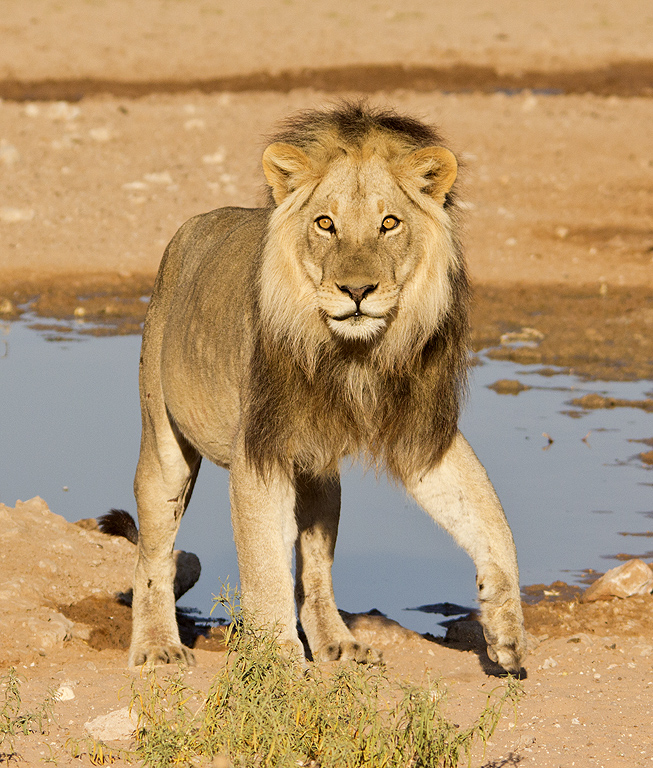
האריה נפוץ בעיקר ביבשת אפריקה, אך גם במדינת גוג'ראט שבהודו. הוא ניזון
מאוכלי עשב שונים אותם הוא צד, וכן מפגרים. בתרבות האנושית נחשב האריה סמל
לגבורה וכוח, ולכן הוצמד לו הכינוי "מלך החיות".
במין אריה קיימים כ-20–35 תת-מינים, אף שמספרם המדויק שנוי במחלוקת.


שמות נוספים של האריה בשפה העברית הם: ליש, שחל, שחץ ולביא.
פיל
פיל הוא מונח לקבוצה פוליפילטית של שלושה מיני יונקים – פיל סוואנה
אפריקני, פיל יער אפריקני ופיל אסייתי – שהם
חיות היבשה הגדולות ביותר בעולם והמינים היחידים ששרדו במשפחת הפיליים.
בעבר היו מינים נוספים מהמשפחה,
ביניהם הממותה, הפלאולוקסודון והסטגוטטרבלודון שאינם נחשבים לפילים רגילים.
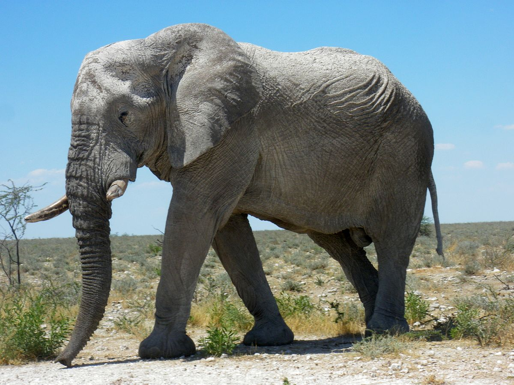
המאפיין הבולט ביותר של הפילים הוא החדק, שבעזרתו הם שותים, אוכלים
ומתרחצים.


הפיל האסייתי ופיל הסוואנה האפריקני מצויים בסכנת הכחדה, בעוד פיל היער
האפריקני נמצא בסכנת הכחדה חמורה.
ג'ירף
ג'ירף או בשמו העממי ג'ירפה הוא סוג פרסתן מעלה גירה ממשפחת הג'ירפיים,
הכולל ארבעה מינים. הג'ירף נחשב לחיה היבשתית הגבוהה בעולם.
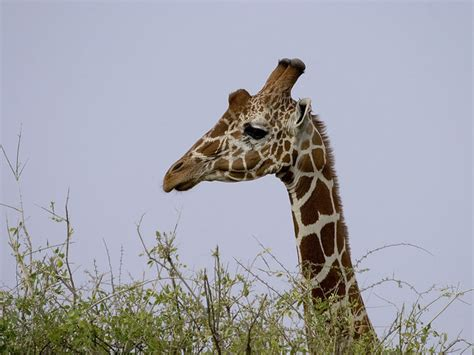
לג'ירף רגליים וצוואר ארוכים מאוד. גובה כתפיו כ-3 מטרים מעל הקרקע וגובה
ראשו כ־5.3 מטר מעל פני הקרקע.
צבעו חום-צהוב עם כתמים כהים וגדולים. צבע זה משמש לו בתור הסוואה מאויביו.
ראיית הג'ירף חדה, והוא מיטיב לרוץ ולהימלט מאויביו במהירות של עד 60–65
קמ"ש.
במצחו בין שתיים לחמש קרניים. בכל רגל של הג'ירף קיים זוג אצבעות אחד בלבד.
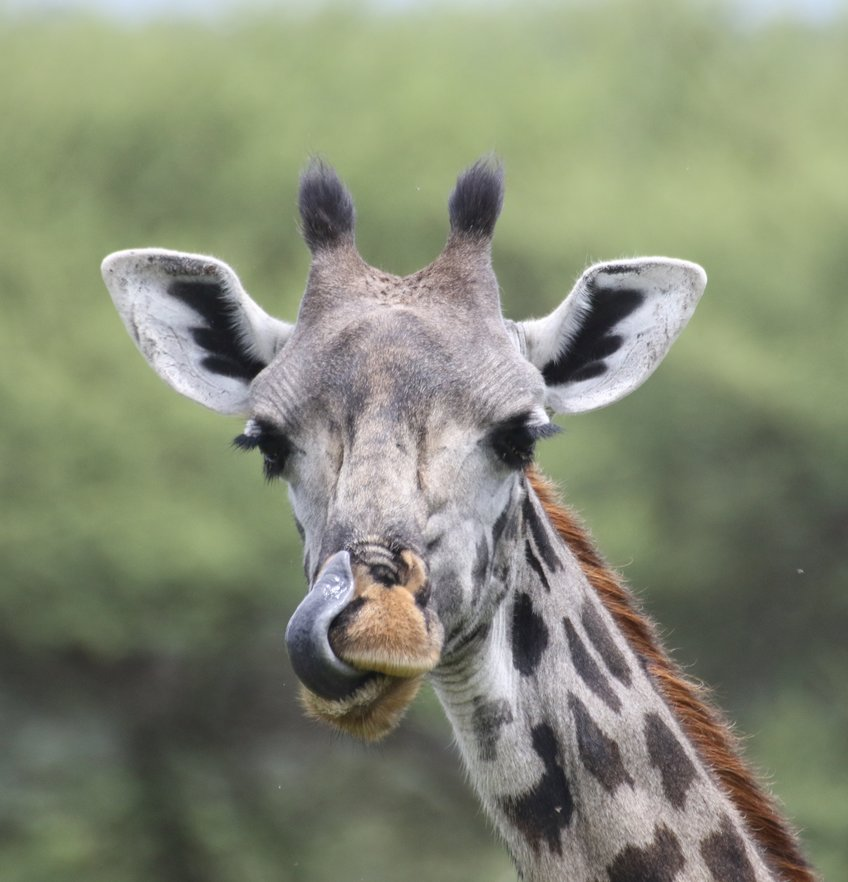
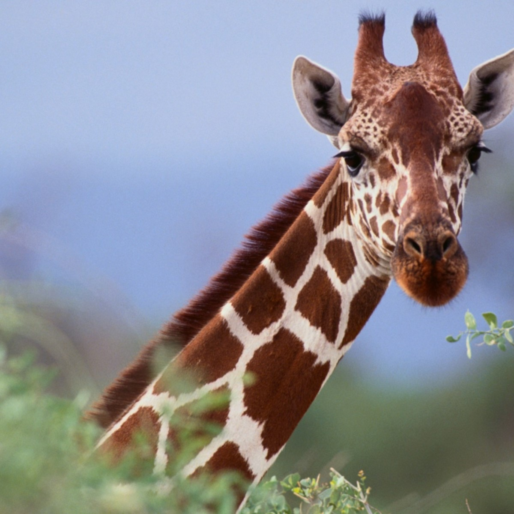
כמו אצל כמעט כל היונקים, גם לג'ירף יש שבע חוליות צוואר, רק שבמהלך
האבולוציה הן התארכו מאוד.
פנדה ענקית
פנדה ענקית היא מין של יונק והמין היחיד ששרד בסוג פנדה, המסווג במשפחת
הדוביים והשוכן במרכז סין.
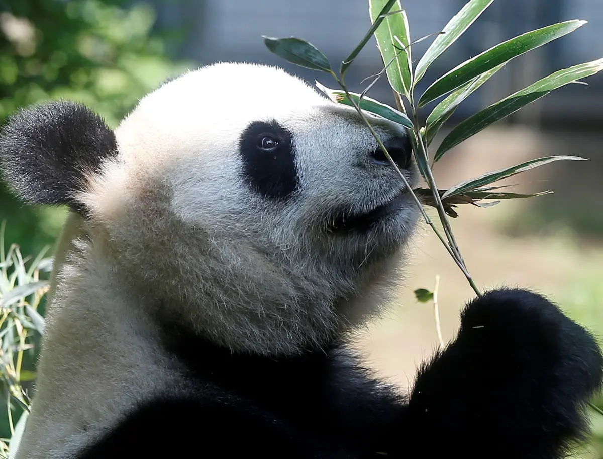
אורכה של הפנדה 1.5 מטר עד 1.8 מטר מהחרטום ועד לזנב, משקלה 75–165 קילוגרם
ורגליה שחורות.
גופה שחור ולבן כשהראש לבן למעט האוזניים השחורות והעיניים המוקפות בכתמים
שחורים דמויי משקפיים, מה שמשווה מראה חביב לבני אדם,
אך כלפי חיות אחרות הוא מהווה איום ומהווה אחד ממנגנוני ההגנה הטבעיים של
הפנדה.
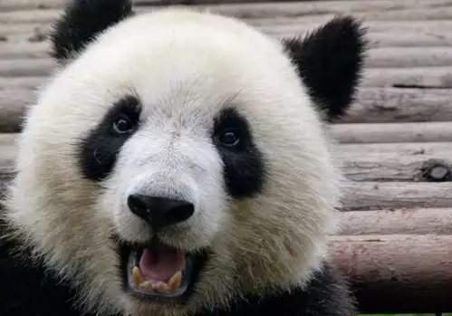
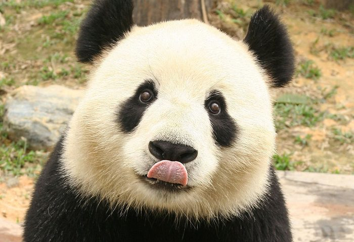
תוחלת החיים של הפנדה בטבע היא כ-15 שנים, אך פרטים שחיים בשבי יכולים
לחיות למעלה מ-20 שנים.
קואלה
קוֹאלה היא מין אנדמי לאוסטרליה, יונק הכיס היחיד בסוגו במשפחת הקואליים
שבסדרת הקנגוראים. עם זאת בעבר היו מינים נוספים במשפחה.

בטבע, נפוצה הקואלה ביבשת אוסטרליה בלבד, בעיקר במזרח היבשת בעיקר באזורים
שבין צפון קווינסלנד לדרום מערב ויקטוריה.
היא חיה באזורי חורשות האקליפטוס, והיחידה הניזונה מעליו של האקליפטוס.
הקואלות מבלות את מרבית זמנן, כ-18 שעות ביממה, בשינה. בשאר הזמן הן תרות
אחר מזון.


על פי הרשימה האדומה של ה-IUCN, הקואלה מוגדרת כמין "פגיע" כלומר, היא
נמצאת בסכנת הכחדה, אולם אם יחול שיפור ניכר בנסיבות המאיימות על הישרדותה
ורבייתה, היא עשויה לצאת ממנו.
תרנגול הבית
תרנגול הבית הוא עוף מבוית, הנפוץ ביותר מבין בעלי־החיים המבויתים ומבין
כלל העופות על פני כדור הארץ.

תרנגולים מוחזקים בידי האדם להפקת בשר, ביצים ונוצות, לגידול כחיות מחמד,
ולעיתים לעריכת קרבות תרנגולים.
השם העברי תרנגול בא מהשפה השומרית דרך האכדית בצורה תר־לוגל, ופירושו הוא
"עוף המלך". כאשר עברה המילה לעברית התחלפה ל' ב־נ' והמילה הפכה לתרנגול.
תרנגול זכר קרוי בעברית גם שכווי או גבר.

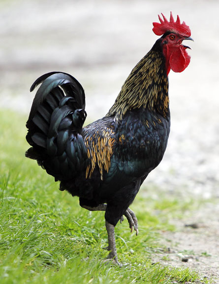
מוצאו של תרנגול הבית בדרום־מזרח אסיה, ששם מצויים בימינו ארבעה מיני
תרנגולי־בר.
חזיר בר
חזיר בר הוא מין חזיר. הוא יונק אוכל-כול שחי בעדרים. כיום חזיר הבר מצוי
לאורך אירופה, המזרח התיכון (לרבות בישראל), בדרום ודרום-מזרח אסיה.
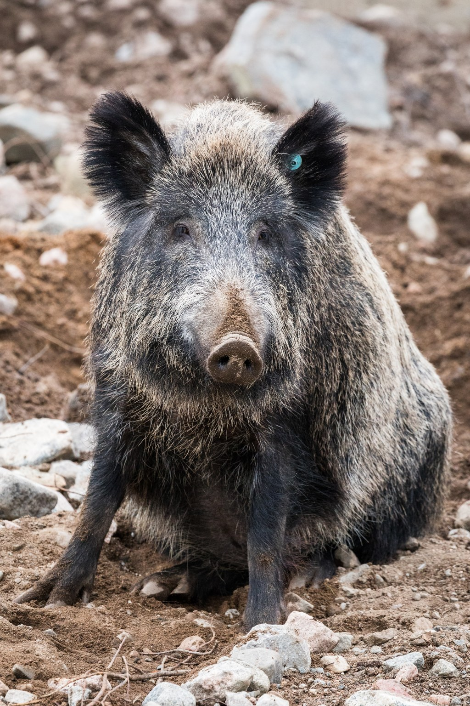
גופו של חזיר הבר קומפקטי, ראשו גדול ורגליו קצרות יחסית. צבע הפרווה משתנה
מאפור כהה ועד לשחור או חום, ובמרכז אסיה יש אפילו חזירי בר לבנים.
בחורף הפרווה מעט צפופה יותר, וגודל החזיר משתנה בהתאם לאזור.
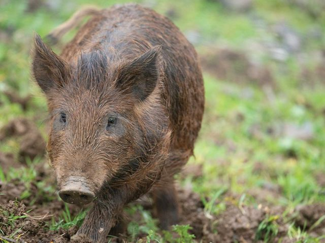
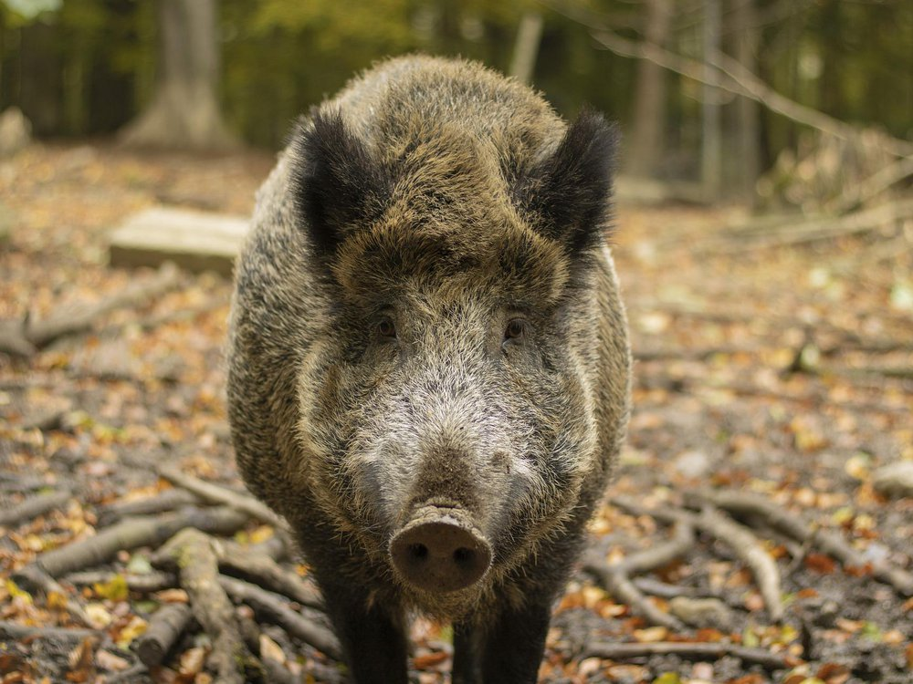
בחיפה יש תופעה של חזירי בר ברחובות העיר. הם שוכנים בוואדיות במשך היום,
ועם החשיכה, בעיקר בשעות הקטנות של הלילה, מגיעים אל הרחובות הקרובים
לוואדיות. תופעה דומה קיימת בעיר רומא.
קנגורו
קנגורו הוא סוג כיסאי גדול מסדרת קנגוראים, החי בערבות אוסטרליה. מינים
אחדים של קנגורו מצויים גם בגינאה החדשה.
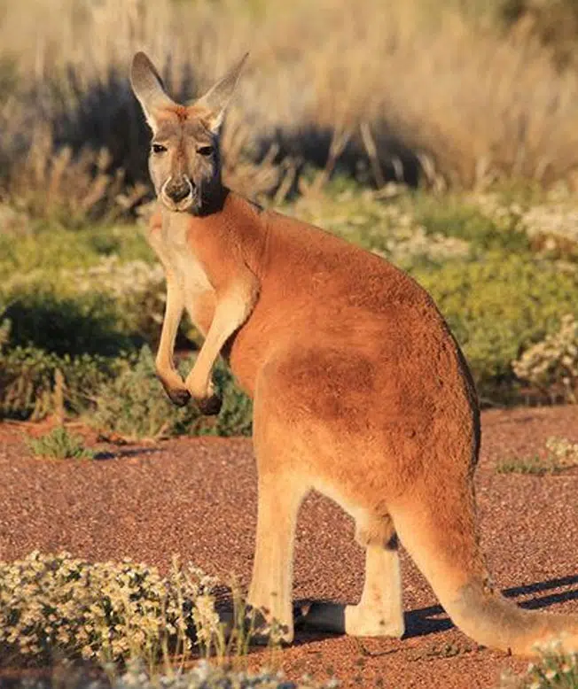
הקנגורו מנתר על שתי רגליו האחוריות החזקות, אך נעזר בתנועתו גם בזנבו החזק
ובטלפיו הקדמיות כדי לדחוף את גופו קדימה. ראשו של הקנגורו קטן, אוזניו
ארוכות ופיו סוסי.
זנבו משמש גם לשמירת שיווי משקל בעת ניתור. למרחק קצר הוא יכול להגיע
למהירות של 70 קמ"ש
. בתנועה למרחק של כשני קילומטרים הוא מסוגל לשמור על מהירות של 40 קמ"ש
ובניתור למרחקים גדולים יותר הוא יכול לנתר במהירות ממוצעת של 20–25 קמ"ש.
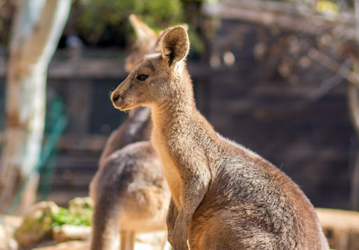
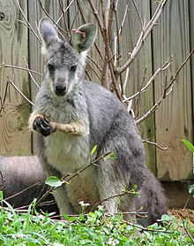
הקנגורו הוא צמחוני, אוכל עשב ושורשים. את שעות היום החמות הוא מעביר
ברביצה, בעוד שבלילה ובשעות הבוקר המוקדמות הוא עסוק בחיפוש מזון.
יען מצוי
יען מצוי הוא מין העוף הגדול ביותר שחי כיום על פני כדור הארץ וגם המהיר
ביותר מבין כל בעלי החיים ההולכים על שתיים (כ-65 קמ"ש).
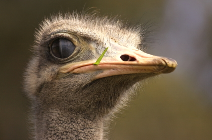
אורך גופו של היען הוא כשני מטרים, גובהו עד 2.5 מטרים ומשקלו עד 160
קילוגרם.
כנפי היען קטנות יחסית לגודל הגוף ואינן מסוגלות לשאת את משקל גופו, לכן
היען אינו יכול לעוף, היען נעזר בכנפיו בעת ריצה לייצוב הגוף, לביצוע פניות
חדות ולעצירה פתאומית.
ליען אין איברי קול אך בעונת הייחום משמיע הזכר באמצעות הוושט קול עמום
שנשמע למרחקים. ראייתו של היען היא מהטובות ביותר מבין העופות שאינם
מעופפים.
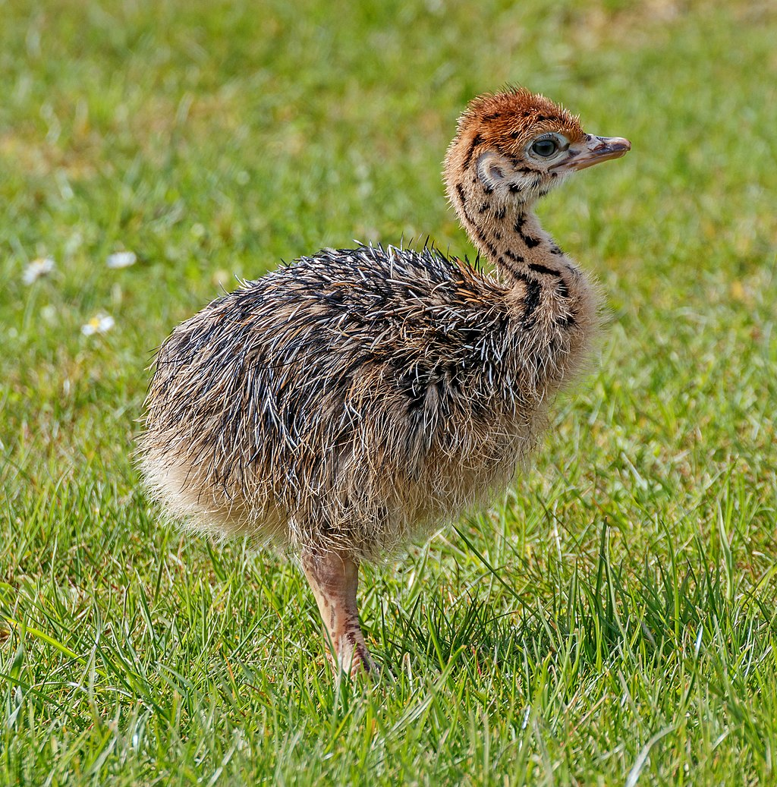
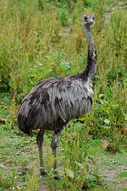
יען עשוי לחיות בטבע עד גיל 40 ובשבי אף עד גיל 50 שנים.
גמל
גמל הוא סוג של פרסתן גדול המשתייך למשפחת הגמליים. הגמל הוא יונק המותאם
לחיים במדבריות.
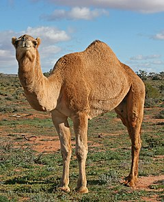
גוף הגמל מותאם לתנאי המדבר ברגליו הגבוהות ובפרווה המכסה אותו. הרגליים
הגבוהות של הגמל מרחיקות אותו מן הקרקע הלוהטת בימי הקיץ החמים.
הגמל פעיל בדרך כלל בשעות הבוקר ולפנות ערב, כאשר האוויר קריר. בשעות החמות
של היום הגמל רובץ בצל או נח בעמידה.
כאשר קיים מחסור במים בגוף הגמל, הוא מפריש שתן מרוכז, המכיל כמויות קטנות
של מים, מה שמצמצם את פליטת המים מגופו (בדומה לאדם ובעלי חיים נוספים).
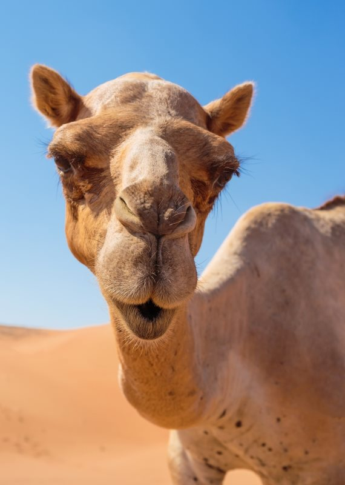
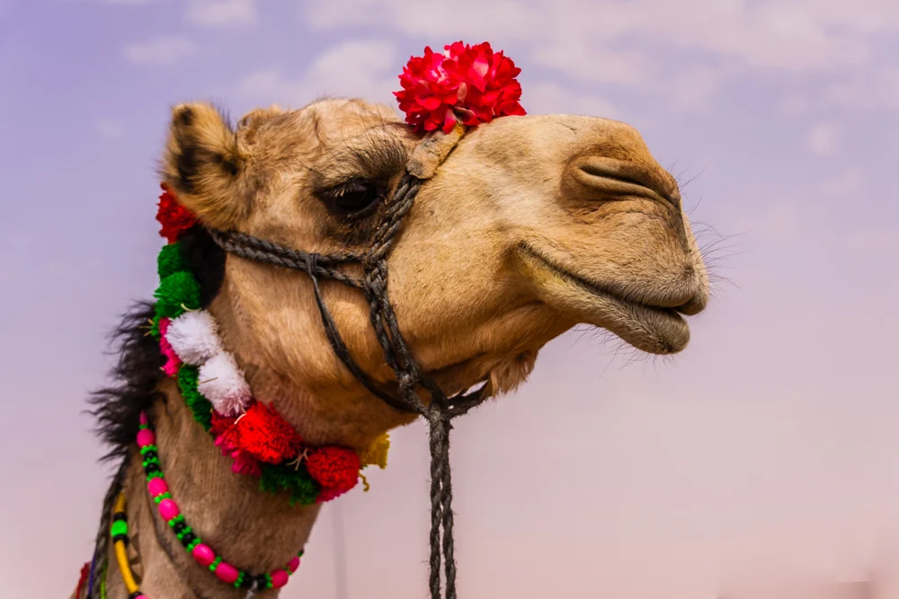
הגמל מסוגל להחזיק מעמד במשך שבועיים בלי לשתות ובלי שייגרם נזק לגופו.